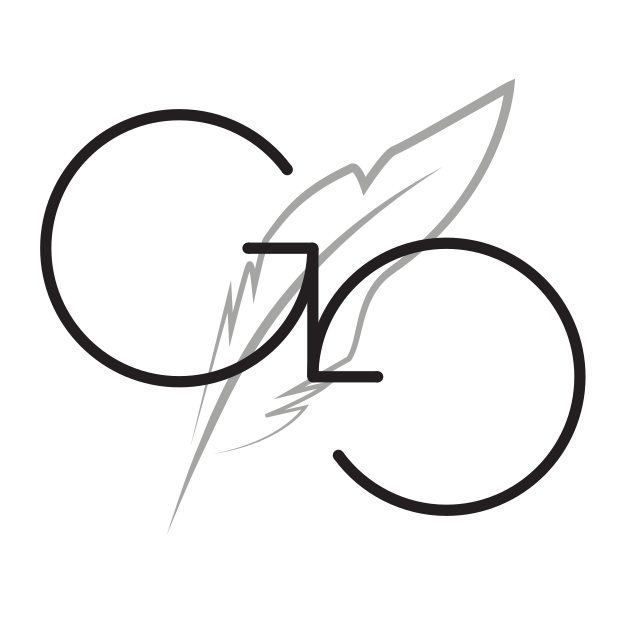

I've always loved music, and especially singing (I was in choir in secondary school) and during lockdown I decided it was time to become a lot more active with music. To that effect, I've been singing more, fiddling with MuseScore more, and so on. Not a great deal is public at the moment, but it has led to one thing I'm particularly proud of. The GrafeasGroupies are a group consisting of myself and several friends. Together we occasionally make albums consisting of memes and some serious tracks. To the right you'll find my cover of 'Mad World', which was included in our second album, mister TypeALot. I hope to create more proper music videos in the future. It can be difficult considering my lack of skill with instrumentals; I have to rely on YouTube to give good backing tracks, which it can't always be relied upon to do. Nonetheless, I sometimes find excellent ones, such as for 'Mad World', and in these cases I hope to create more recordings good enough to upload.
 Transcribing? What's that? Transcribing is accessibility, is what it is! This is something I spend a good portion of my time doing, and I've met many wonderful people doing it too, so it's very close to my heart. But what is it really? It's not your normal transcribing initiative, such as a large library organising an effort to transcribe old documents; no, at the moment it's something quite a lot smaller. I'd like to introduce you to the Grafeas Group (logo right), a small 501(c)(3) non-profit organisation that runs r/TranscribersOfReddit, an accessibility initiative to transcribe audio, image and video posts on Reddit for the benefit of people who would not normally have access to them. This lack of access can be due to visual or hearing impairents, slow internet, inconsistency of rendering across Reddit's various official and third-party clients, and more. To help these people, the posts are transcribed into the comments, where they can be accessed either by simply reading, or where necessary, by assisstive technology such as screen readers. I've been transcribing with the Grafeas Group for over a year as of July 2021, and helping moderate the subreddit since February 2021. I've even used a few transcriptions myself in the past when the contrast between the text and the background of images didn't suit my colour vision (I have protanomaly). I could talk for hours about transcribing and the Grafeas Group, but it's probably already sounding like an advert. Biased as I may be, I do genuinely believe they're one of the best communities on the internet!